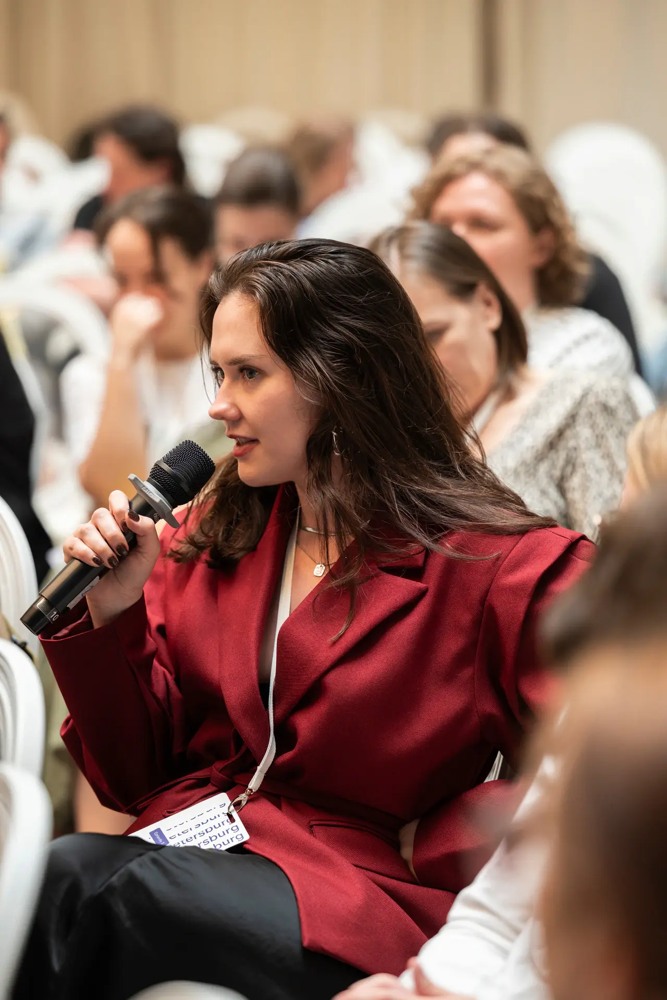

Вуз даёт теорию,
а не практику
Вы знаете теории личности, но пока не знаете, что делать на первой сессии и как вести клиента.
Студенческая конференция 2.0 — о первых клиентах, выборе метода и своём пути в психологии.
Зарегистрироваться бесплатно
21 ноября 2026
Онлайн в Zoom
Участие в эфире бесплатное
Эта конференция для вас, если между учёбой и работой с клиентами пока больше вопросов, чем ответов.
Узнать, с чего начатьОтметьте вопросы, которые сейчас важны вам
{{AUDIENCE}}Вы знаете теории личности, но пока не знаете, что делать на первой сессии и как вести клиента.
Выбор школ огромный. Без ориентиров легко потратить годы на изучение подхода без научной базы.
Психологов, школ и экспертного контента стало больше. Начинающему сложнее выделиться и найти первых клиентов.
Обучение, супервизия, первые клиенты: без плана путь в профессию занимает дольше, чем мог бы.
Карта
психологических
подходов
Ваш первый ориентир — сразу после регистрации
Мини-гид по психологическим подходам. С ним легче ориентироваться в названиях и подготовить свои вопросы к конференции.
Видеоурок «Как провести первую сессию» — чтобы перейти от общих ориентиров к конкретному разговору с клиентом.
Демо-бонус · содержание и условия уточняютсяПрактикующие психологи, клиники и профессиональные ассоциации расскажут, как на самом деле выглядит переход от учёбы к работе с клиентами.


Клинический психолог, КПТ- и схема-терапевт. Директор по развитию АСП.
Откроет конференцию разговором о том, с чего начинать путь в психологии в 2026 году.
Продолжаем знакомить вас с экспертами. Состав спикеров и партнёров будет пополняться.
Три трека — выбирайте то, что сейчас важно вам. Между залами можно переходить в любой момент.
21 ноября / ZoomИона Гусаченко · АСП
Приглашённого спикера объявим скоро
Разговор о профессиональном пути, ответы на вопросы и специальное предложение для студентов. Состав участников финала объявим позже.
Финальные названия выступлений и подробности появятся после согласования со спикерами. Список тем будет пополняться.
участников в эфире
вузов у участников
спикеров-практиков
Участники из разных городов
Встречаемся онлайн в Zoom.
Выберите, как вам удобнее участвовать.
Участие в эфире бесплатное, записи — платные.
Карта подходов придёт сразу после регистрации.
Выберите мессенджер. Здесь вы получите карту подходов и ссылки на залы конференции.
Это просмотр сценария. Боты будут подключены перед запуском регистрации.